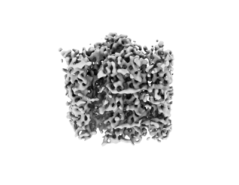

basal body B-C inner junction
A proteinaceous junction network at the lumen-facing interface between the B- and C-tubules of a basal-body triplet microtubule, connecting the two tubules with region-dependent composition. [DOI:10.1083/jcb.202311104]

NCBITaxon:5911) · Ruehle M, Li S, Agard DA, Pearson C; EMDB depositor representative figure, without copyright restrictions. · PUBLIC_DOMAIN · source: EMDB EMD-42781 · DOI:10.1083/jcb.202311104Synonyms: B-C inner junction
Part of: ciliary basal body (GO:0036064)
Components
| Component | Type | Part of / acts on | Grounding | Genes | Stoichiometry | Essential | Role |
|---|---|---|---|---|---|---|---|
| POC1 family protein | Protein | part of | Reviewed label only (reviewed name; no accession asserted) | POC1 | UNKNOWN | Its N-terminal WD40 domain bridges B08 and C10 in the proximal Tetrahymena junction. The C-terminal region continues into the neighboring A-C linker. This membership is not assigned to the compositionally distinct core B-C junction.
| |
| alpha-helical inner-junction ladder protein | Protein | part of | Reviewed label only (reviewed name; no accession asserted) | UNKNOWN | Forms an alpha-helical ladder connecting B07 and C10 in the proximal Tetrahymena B-C junction. It is distinct from the additional unassigned WD40 density between successive POC1 molecules.
|
Canonical examples
NCBITaxon:5911Tetrahymena thermophila — Cryo-ET of isolated basal bodies resolves different proximal and core B-C networks, with wild-type and poc1-deletion comparisons. Methods list B2086 and SB1969 backgrounds; this is a species-level example, not a pairing with SB210 reference sequences. [DOI:10.1083/jcb.202311104]NCBITaxon:3055Chlamydomonas reinhardtii — Cryo-ET of nucleo-flagellar apparatus from cc849, cw10 mt-, resolves a B-C junction network. The main average combines proximal mother-basal-body segments and attached procentrioles; separate averages reveal maturity-related differences. MIP9-11 are density labels, not verified equivalents of the Tetrahymena molecular assignments. [DOI:10.7554/eLife.43434]
Functions
- luminal B-C tubule connection — Connects the B- and C-tubules along the lumen-facing triplet interface. The Tetrahymena core junction also provides an interface for attachment of the separate inner scaffold.
DOI:10.1083/jcb.202311104Figure 2D and Figure S4B-D show proximal and core bridging networks and distinguish the core junction from its scaffold attachment. This structural function is not a measured force threshold or a junction-specific explanation of all poc1 mutant defects.DOI:10.7554/eLife.43434Results and Figure 2C describe a network of MIP densities at the Chlamydomonas B-C inner junction without assigning their gene products.
Mechanism graphs
Proximal B-C junction contacts (FUNCTION)
A bounded structural-contact network in the proximal Tetrahymena basal body.
| Subject | Predicate | Object | Evidence |
|---|---|---|---|
| POC1 family protein | contacts | basal-body B-tubule |
|
| POC1 family protein | contacts | basal-body C-tubule |
|
| alpha-helical inner-junction ladder protein | contacts | basal-body B-tubule |
|
| alpha-helical inner-junction ladder protein | contacts | basal-body C-tubule |
|
Discussions
- CURATION_TODO (RESOLVED): Distinguish the B-C inner junction from connected basal-body modules. This is a named proteinaceous junction network within a triplet, not one protein.
- CURATION_TODO (OPEN): Resolve exact POC1 and alpha-helical inner-junction ladder family groundings. A repeat, domain or combined family does not denote an exact component class.
- CURATION_TODO (OPEN): Identify the additional proximal WD40 protein and the core B-C bridging proteins. The named proximal classes are not a complete or universal junction composition.
- CURATION_TODO (RESOLVED): Reconcile the earlier unassigned ladder with newer molecular evidence. Molecular uncertainty must follow the source chronology.
- CURATION_TODO (OPEN): Resolve Chlamydomonas MIP9-11 identities and reconcile the reported MIP9 repeat. Density labels and geometric similarity are not cross-species protein identities.
- CURATION_TODO (RESOLVED): Keep neighboring linkers, scaffolds and axonemal proteins outside junction composition. A composite map includes material beyond the curated structural boundary.
- CURATION_TODO (RESOLVED): Avoid converting heterogeneous static reconstructions into a temporal assembly mechanism. Poc1 loss affects multiple structures and specimen isolation can destabilize triplets.
- CURATION_TODO (RESOLVED): Handle the conflicting regional label for EMD-46438 without silently choosing one. Native archive titles and article tables do not always agree.
Datasets
- Wild-type proximal B-C inner junction (
EMDB:EMD-42781) · OTHER · STRUCTURAL_IMAGING
Organism: Tetrahymena thermophila · Platform: cryo-electron tomography and focused subtomogram averagingReleased native EMDB metadata, natural-source taxon 5911 and exact primary citation verified. These are bounded reconstruction links, not exact whole-structure identities or universal compositions. Full volume maps are not retained; mutant comparisons are not selective B-C-junction ablations.
- Wild-type central-core basal-body triplet (
EMDB:EMD-42777) · OTHER · STRUCTURAL_IMAGING
Organism: Tetrahymena thermophila · Platform: cryo-electron tomography and subtomogram averagingReleased native EMDB metadata, natural-source taxon 5911 and exact primary citation verified. These are bounded reconstruction links, not exact whole-structure identities or universal compositions. Full volume maps are not retained; mutant comparisons are not selective B-C-junction ablations.
- Poc1-knockout proximal basal-body triplet (
EMDB:EMD-42783) · OTHER · STRUCTURAL_IMAGING
Organism: Tetrahymena thermophila · Platform: cryo-electron tomography and subtomogram averagingReleased native EMDB metadata, natural-source taxon 5911 and exact primary citation verified. These are bounded reconstruction links, not exact whole-structure identities or universal compositions. Full volume maps are not retained; mutant comparisons are not selective B-C-junction ablations.
- Poc1-knockout central-core basal-body triplet (
EMDB:EMD-42784) · OTHER · STRUCTURAL_IMAGING
Organism: Tetrahymena thermophila · Platform: cryo-electron tomography and subtomogram averagingReleased native EMDB metadata, natural-source taxon 5911 and exact primary citation verified. These are bounded reconstruction links, not exact whole-structure identities or universal compositions. Full volume maps are not retained; mutant comparisons are not selective B-C-junction ablations.
- Proximal B-C inner junction focused on POC1 (
EMDB:EMD-53982) · OTHER · STRUCTURAL_IMAGING
Organism: Tetrahymena thermophila · Platform: cryo-electron microscopy and focused single-particle reconstructionReleased native EMDB metadata, natural-source taxon 5911 and exact primary citation verified. These are bounded reconstruction links, not exact whole-structure identities or universal compositions. Full volume maps are not retained; mutant comparisons are not selective B-C-junction ablations.
- Proximal B-C inner junction focused on the WD40 region (
EMDB:EMD-53983) · OTHER · STRUCTURAL_IMAGING
Organism: Tetrahymena thermophila · Platform: cryo-electron microscopy and focused single-particle reconstructionReleased native EMDB metadata, natural-source taxon 5911 and exact primary citation verified. These are bounded reconstruction links, not exact whole-structure identities or universal compositions. Full volume maps are not retained; mutant comparisons are not selective B-C-junction ablations.
Evidence
DOI:10.1083/jcb.202311104Ruehle et al. 2024. Official PMC11094743.1 JATS checksum verified; proximal/core and mutant Results, relevant Discussion, Methods and captions inspected. Figures 2 and S4 visually checked. Molecular fitting and perturbation evidence are distinguished; no verbatim snippets are asserted.DOI:10.1126/sciadv.ady3689Cai et al. 2025. Official PMC12506977.1 JATS checksum verified; junction Results, relevant isolation/model-building Methods and data availability read, and Figure 4 visually inspected. Structural isolation uses SB715; model assignments are MS-guided predicted-model fits.DOI:10.7554/eLife.43434Li et al. 2019. Official PMC6384029.1 JATS checksum verified; relevant architecture, MIP and assembly Results, Methods and MIP9 author response read. Figure 2 and its supplement 12 visually checked. Main averages combine mother-basal-body proximal segments with attached procentrioles.DOI:10.1038/s44318-025-00392-6Li et al. 2025 provides the earlier unassigned inner-ladder observation and an explicitly retained B-C dataset-label conflict. It is not the source for the later I7LY02 molecular assignment.
Curation history
2026-10-04T10:49:33Zcodex · CREATED_RECORD — Scaffolded by scripts/new_record.py2026-10-04T10:52:29Zcodex · EXPANDED_RECORD — Added region-bounded B-C junction components, two species examples, proximal structural contacts, verified EMDB datasets and density preview. Preserved unassigned core/WD40 identities, model-fitting limits, strain provenance, cross-species uncertainty and conflicting reported repeat/dataset labels.
Source: data/structures/cytoskeleton/basal_body_b_c_inner_junction.yaml